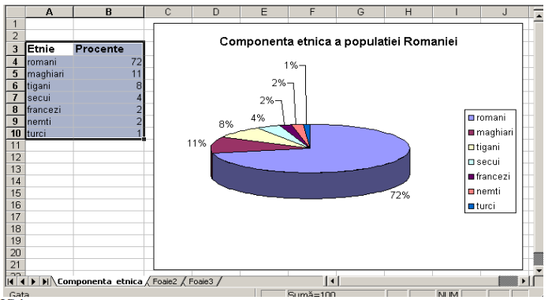

F I Ş A Nr. 5
APLICAŢII.
- Deschideţi aplicaţia Microsof Excel
- Redenumiţi prima foaie de calcul cu numele ‘Componenta etnică’ şi apoi introduceţi datele din tabelul următor:(Etnie, Procente)

- Selectaţi zona de date de la A3 pană la B10 şi alegeţi din meniul Inserare o diagramă radială cu efect 3D
-
Selectaţi eticheta Titluri şi introduceţi titlul : ‘Componenta etnică a populaţiei Romaniei’.
- Schimbaţi culorile fiecărei etnii prin dublu click pe culoarea din cercul
desenat apoi selectaţi culoarea din caseta deschisă după care apăsaţi butonul OK.
-
Adăugaţi o nouă foaie de calcul şi redenumiţi-o cu numele ‘ Temperaturile iarna’ apoi introduceţi datele din tabelul următor:

- Inseraţi o diagramă de tip linie folosind datele din tabel.
- Formataţi diagrama ca in figura de mai sus.
-
Adăugaţi o nouă foaie de calcul şi redenumiţi-o cu numele ‘ Grădina zoo’ şi introduceţi datele din tabelul următor:

- Inseraţi o diagramă de tip coloană folosind datele din tabel.
- Formataţi diagrama ca in figura de mai sus.